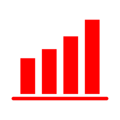

Data Science Senior Project

How BodyByData actually got built: the brand, the design decisions, and the app that grew out of Triad.
In progress, growing alongside the real build
01
Triad was never meant to be the end of the project. It was scoped from the start as the data foundation for something bigger: a personal fitness intelligence app that could unify sleep, nutrition, and training into one daily answer, packaged for people who are not going to write their own Python pipeline to get it. The research question behind Triad, whether sleep quality and prior training load can predict what a day's workout and calorie target should be, was always meant to power a real, day-to-day product once it was validated.
This section will grow as the actual BodyByData build progresses in its own project. Next real content needed here: the specific moment the idea crossed from "package" to "app I want other people to use," and what changed in the plan once that decision was made.